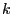
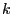

Next: ObjNName Up: Multi-objective Attributes Previous: ObjNAbsTol
| Type: | double |
|---|---|
| Modifiable: | No |
This attribute is used to query the objective value obtained for
objective  by the -th solution stored in the pool of feasible
solutions found so far for the problem.
You set
by the -th solution stored in the pool of feasible
solutions found so far for the problem.
You set  using the ObjNumber
parameter, while you set using the
SolutionNumber parameter.
using the ObjNumber
parameter, while you set using the
SolutionNumber parameter.
The number of objectives in the model can be queried (or modified) using the NumObj attribute; while the number of stored solutions can be queried using the SolCount attribute.
Please refer to the discussion of Multiple Objectives for more information on the use of alternative objectives.
For examples of how to query or modify attributes, refer to our Attribute Examples.